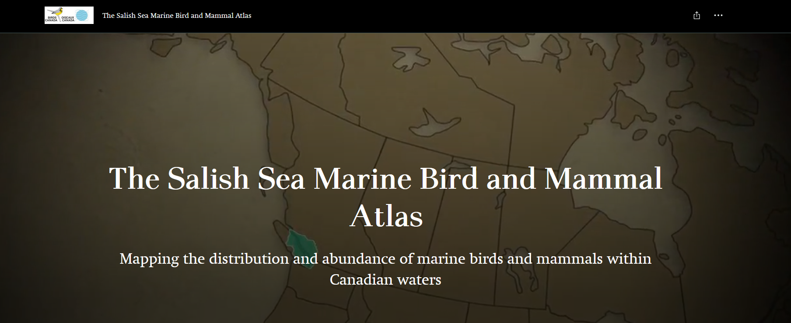

Chapter 2 Avian Data
2.1 Overview
There are seemingly endless datasets that live on the hard drive of some retired government biologist computer. Since the goal of this guide to identify available data resources, we do not include datasets that are difficult to find, lack well documented metadata, or require complex data permissions. Thus, avian datasets needed to be openly accessible to be included in this guide. Generally, the datasets that are not openly accessible are older (pre-2000) and cover a narrow geographic extents. Because of this, the guide is scoped primarily to data collected post-2000.
In this section of the guide we detail each avian dataset separately. The datasets are presented in the following order: Canada, U.S., transboundary. We then focus on how to compile the data into a standardized framework.
2.2 BCCWS
British Columbia Coastal Waterbird Survey

2.2.1 Quick Data Overview
| Data | British Columbia Coastal Waterbird Survey (BCCWS) |
|---|---|
| Owner | Birds Canada/ Canada Wildlife Service |
| Status | Active |
| Years | 1999 - present |
| Seasons | Monthly survey, with a winter focus from Sept - April |
| Sampling | Coastal surveys along designated routes |
| Data Access | Available directly in R, with permission from Birds Canada or through the NatureCounts webportal |
| Contact | rtorrenta@birdscanada.org |
2.2.2 Data Collection Protocol
BCCWS data collection protocol can be found online here.
In short, surveys have been conducted by volunteers using a standardized protocol and data collection sheets. Shore-based counts are completed monthly on or near the second Sunday of each month from September to April. Surveys are complete within approximately 2 hours of high tide to maximize the opportunity for close observation. All waterbirds observed to a distance of 1 km from the high tide line are counted, except those that fly through without stopping. In the case of larger flocks, numbers are estimated by counting individuals and species in groups and scaling up (see Training Module for Volunteers). Data are entered through a customized online data entry system available on the Birds Canada website, NatureCounts. Observations are processed using the eBird data filters to flag rare species and high counts during observer data entry, and records are manually reviewed for form accuracy.
2.2.3 Avian Data Collected
Observation counts of waterbirds and raptor seen during a survey are compiled at the scale of the route (i.e., the maximum count per species) on each monthly survey. These observations are divided into inland, near shore (shoreline to 500m out from high tide), off shore (beyond 500m), and total counts. The dataset is not zero-filled.
Taxonomic Authority = eBird/Clements v2019
2.2.4 Auxiliary Data Collected
- Observer information: observer ID
- Survey information: time observation started, time observation ended, duration in hours
- Survey condition: precipitation, % cloud, sea condition, tide state, tide movement, visibility, survey equipment, human activity (all categorical)
2.2.5 Data Access, Permission, and Format
Data can be freely accessed through the NatureCounts data download portal or directly through the naturecounts R package, which I will demonstrate later in this chapter. The BCCWS is Access Level 4 dataset, meaning a data request form must be submitted. This is not meant to be a barrier, rather a means of keeping track of who is using the data and for what purposes.
Data are formatted using a standardized schema that is a core standard of the Avian Knowledge Network and which feeds into GBIF. This format is called the Bird Monitoring Data Exchange (BMDE), which includes 169 core fields for capturing all metric and descriptors associated with bird observations.
2.2.6 Data Use Considerations
The data are collected using a standardize protocol, by trained citizen-science volunteers. This standardization is a strength of this datasets for making inferences about coastal waterbirds in the Canadian Salish Sea.
The repeated sampling design of the BCCWS makes this dataset suitable for an occupancy modelling framework, in which the probability of detection can be modeled alongside occupancy. Auxiliary data collected during each survey are suitable for the detection process of the model. Using mean counts in abundance on a route within a year, these data have also been recently used to assess coastal waterbird trends.
Measures of effort are innate to the dataset. Survey duration (column
DurationinHours) and survey area can be used to make effort correction
to counts. Survey areas for each survey route has been provided as a
.shp file in the Data folder in this project directory. The number of
years an observer has been doing the survey can also be used to correct
for observer bias.
There is spatial inbalance in the sampling design, with more routes occurring in the southern Salish Sea and around areas that are inhabited by people. Hard to access locations are not well sampled, nor are regions further to the north. Since this survey is shore-based, there will be a species sampling bias. Specifically, birds that use near shore habitats will be detected and counted more often than birds which use offshore habitats. This dataset may therefore be less suitable for modelling at-sea habitat use, for example.
The dataset should be filtered prior to use. For example, rare species should be removed since they are not necessarily representative (e.g., those which occur on <1% of routes). Depending on the analysis, routes that are run for only a short time (e.g., <3 years) or which have incomplete data (e.g., <8 months per year or <4 core winter month) may be considered for removal.This dataframe is not zero-filled. It is up to the data user to zero-fill the martix prior to use.
2.2.7 Data Use Examples
Ethier, D.M., P.J.A. Davidson, G. Sorenson, C. Jardine, D. Lepage, K. Barry, K. Devitt, D.W. Bradley. 2020. Twenty years of coastal waterbird trends suggest regional patterns of environmental pressure in British Columbia, Canada. Avian Conservation and Ecology. 15(2):20
Middleton, H. A., R. W. Butler, and P. Davidson. 2018. Waterbirds alter their distribution and behavior in the presence of Bald Eagles (Haliaeetus leucocephalus). Northwestern Naturalist 99:21–30. doi: 10.1898/nwn16-21.1.
Crewe, T., K. Barry, P. Davidson, and D. Lepage. 2012. Coastal waterbird population trends in the Strait of Georgia 1999 – 2011: Results from the first 12 years of the British Columbia Coastal Waterbird Survey. British Columbia Birds 22: 8–35.
Bower, J. L. 2009. Changes in marine bird abundance in the Salish Sea: 1975 to 2007. Marine Ornithology 37: 9–17.
Badzinski, S. S., R. J. Cannings, T. E. Armenta, J. Komaromi, and P. J. Davidson. 2006. British Columbia Coastal Waterbird Survey: An evaluation of survey power and species trends after five years of monitoring. Canadian Wildlife Service, Pacific and Yukon Region, Technical Report Series no. 455: 1-122.
2.3 BCMA
British Columbia Marine Bird Atlas

2.3.1 Quick Data Overview
| Data | British Columbia Marine Bird Atlas (BCMA) |
|---|---|
| Owner | Birds Canada/ Pacific Wildlife Foundation |
| Status | Not Active |
| Years | 2008-2015 |
| Seasons | Monthly surveys over a full year, with some variability |
| Sampling | Vessel transects along designated routes, over different regions of the Canadian Salish Sea in each year |
| Data Access | Available directly in R or through the NatureCounts webportal |
| Contact | acouturier@bsc-eoc.org |
2.3.2 Data Collection Protocol
Protocols are published in technical reports (links below), which may differ slightly between years since each year the survey focused on a different geographic region within the Salish Sea. Also note that the year long survey period straddles a calendar year.
In short, counts of birds and marine mammals were made from a small boat moving at 10-12 knots within a 200 m (100m on either side) wide transect parallel to the shoreline. Surveyors also recorded the number of birds and mammals seen beyond 100 m of the boat. Two observers scanned for birds and mammals on either side of the boat. One observer calls out waypoints approximately every 250-500 meters (depending on survey year), while the other observer recorded the data. Binoculars are used to assist in counting and identifying distant birds and mammals. In most situations, birds and mammals are counted individually. Flocks of more than about 100 individual birds were estimated by summing the number by groups of 10s of individuals.
Technical reports can be found here:
- The Southern Gulf Islands (2008-2010)
- Burrard Inlet and Indian Arm (2011-2013)
- Boundary Bay (2007-2008) (no report available)
- Howe Sound (2014-2015)
- The Fraser River Estuary (2016-2017)
2.3.3 Avian Data Collected
Counts of waterbird seen during a survey are compiled for each point along a survey transect (i.e., the maximum species count) on each monthly survey. These observations are divided into Port Section, Central Section, Board Section and total ObservationCount. The dataset is not zero-filled.
Taxonomic Authority = AOU
2.3.4 Auxiliary Data Collected
- Observer information: observer ID
- Survey information: time observation started, time observation ended, duration in hours
- Survey condition: none recorded
2.3.5 Data Access, Permission, and Format
Data can be freely accessed through the NatureCounts data download portal or directly through the naturecounts R package, which I will demonstrate later in this chapter. The BCMA is an Access Level 5 dataset, meaning a data request form is not required to get access to this dataset, and it can be openly downloaded directly into R using the naturecounts R package.
Data are formatted using a standardized schema that is a core standard of the Avian Knowledge Network and which feeds into GBIF.This format is called the Bird Monitoring Data Exchange (BMDE), which includes 169 core fields used for capturing all metric and descriptors associated with bird observations.
2.3.6 Data Use Considerations
Measures of effort are innate to the dataset. Survey duration (column
DurationinHours) can be used to make effort correction to counts.
Surveys targeted regions of the Canadian Salish Sea that are known to be important to seabirds. The sampling design is therefore not randomized with respect to habitat types samples, which may limit its usability for habitat suitability modelling.
This dataframe is not zero-filled. It is up to the data user to zero-fill the martix prior to use.
Some data are missing from the NatureCounts database. Birds Canada is working to get this updated before the official release of this book
2.4 PSSS

2.4.1 Quick Data Overview
| Data | Puget Sound Seabird Survey (PSSS) |
|---|---|
| Owner | Seattle Audubon/ Puget Sound Bird Observatory |
| Status | Active |
| Years | 2008 - present |
| Seasons | Monthly survey, with a winter focus from Oct - April |
| Sampling | Coastal surveys at designated points |
| Data Access | Available by contacting data owner |
| Contact | t_ross@pugetsoundbirds.org |
2.4.2 Data Collection Protocol
PSSS data collection protocol can be found online here.
In short, surveys are conducted by volunteers using a standardized protocol and data collection sheets. Shore-based counts are completed monthly on the first Saturday of each month from October to April. Surveys are completed within approximately 2 hours of high tide to maximize the opportunity for close observation. Surveys are a minimum of 15 minutes and a maximum of 30 minutes per site. All waterbirds observed to a distance of 300 m from the high tide line are counted, except those that fly through without stopping. For large flocks, surveys estimate both the min, max, and best estimate. Surveyors are required to attend a short training session with Seattle Audubon staff prior to their first survey. Data are entered through a customized online data entry system, available here.
2.4.3 Avian Data Collected
Total observation counts of each waterbird species seen during a point survey are recorded, including bearing, distance, and sex ratio. Raptors are recorded separately from the other waterbird species. The dataset is not zero-filled.
Taxonomic Authority =
2.4.4 Auxiliary Data Collected
- Observer information: observer name
- Survey information: time observation started, time observation ended
- Survey condition: weather, precipitation, sea state, tide movement, visibility, human activity, raptor activity (all categorical)
2.4.5 Data Access, Permission, and Format
At the time of writing, the data were only accessible by reaching out to the Seattle Audubon directly and filling out a data share agreement. The data will be sent to you as a .xslx flat file which will be suitable for Data Processing. Ensure that you receive all the data for the specified temporal period you are interested in analyzing. This will be needed to allow for proper zero-filling.
2.4.6 Data Use Considerations
The data are collected using a standardized protocol, by trained citizen-science volunteers. This standardization is a strength of this dataset for making inferences about coastal waterbirds in the US Salish Sea.
Since surveyors gather information on distance and direction, estimates of bird density through distance sampling are possible. Specifically, detection of any species declines with the distance from the observer: poor sighting conditions, quality of observing equipment, and observer inexperience all contribute to declining detection likelihood as distance increases. Distance sampling provides a robust approach to estimating density and allows for the calculation of less biased density estimates.
The repeated sampling design of the PSSS makes this dataset suitable for an occupancy modeling framework, in which the probability of detection can be modeled alongside occupancy. Auxiliary data collected during each survey are suitable for the detection process of the model.
Measures of effort are innate to the dataset. Survey duration can be used to make effort corrections to counts.
Is there a spatial imbalance in the sampling design? Since this survey is shore-based, there will be a species sampling bias. Specifically, birds that use nearshore habitats will be detected and counted more often than birds that use offshore habitats. This dataset may therefore be less suitable for modeling seabird habitat use, for example.
This PSSS survey was designed to be similar to the BCCWS, with some notable differences:
| BCCWS | PSSS |
|---|---|
| Survey the second Sunday | Survey the first Saturday |
| Sept-April | Oct-April |
| 1km count distance | 300m count distance |
| Survey route | Survey point |
2.4.7 Data Use Examples
Ward EJ, Marshall KN, Ross T, Sedgley A, Hass T, Pearson SF, Joyce G, Hamel NJ, Hodum PJ, Faucett R. 2015. Using citizen-science data to identify local hotspots of seabird occurrence. PeerJ 3:e704 https://doi.org/10.7717/peerj.704
2.5 PSEMP
Midwinter Aerial Seabird Survey

2.5.1 Quick Data Overview
| Data | Midwinter Aerial Seabird Survey (PSEMP) |
|---|---|
| Owner | Washington Department of Fish and Wildlife (WDFW) |
| Status | Active |
| Years | 1994 - present |
| Seasons | Early December until the surveys are complete, which is usually in February |
| Sampling | Aerial flights along fixed routes |
| Data Access | Open Data Portal |
| Contact | Joseph.Evenson@dfw.wa.gov and Kyle.Spragens@dfw.wa.gov |
2.5.2 Data Collection Protocol
Links to a data collection sheet and protocol if available
Surveys are flown each year by a crew of experienced WDFW biologists from early December until the surveys are complete, which is usually by the end of January or February. The surveys were designed to occur during midwinter when sea ducks and other marine birds are least likely to be migrating. Flights are conducted at an altitude of 200 feet (61 meters) above the water and at an airspeed of 85-90 knots. Each biologist makes all marine bird and mammal observations within a 50-meter strip along their respective side of the aircraft. The surveys cover the entire shoreline of the inland marine waters of Washington. The offshore waters are sampled by flying a pre-designed zigzag pattern.
PSEMP data processing notes can be found online by navigating to the
ESRI open data
portal.
Download the data by clicking the Open button, then save the files to
the Data directory in this project. Information on data processing can
be found in the
Midwinter Aerial Seabird Surveys Geoprocessing Metadata Notes.pdf.
In short, during pre-processing the flight crew transcribe voice recordings of their observations, linking them with a series of point locations collected during the survey by GPS. The results are provided as two tab-delimited text files containing observation and track-log locations. When the surveyors have completed their transcription, a series of geoprocessing scripts are run which omit off-effort observations, calculate the extent of surveyed areas, and add appropriate attribute information to both observations and survey strips.
2.5.3 Avian Data Collected
The PSEMP_Survey_Observations layer stores the processed bird
observation data, including the total ObservationCount of species on a
given transect.
There are three additional tables that are used to assign species to species codes, scientific names, and groups.
- Species: This table lists the avian species groups recorded during the winter fixed-wing aerial shorebird surveys. It provides species’ common and scientific names as well as the species codes (TaxoNameID) necessary to crosswalk these species to group membership (for composite groups analyzed) and to other WDFW databases.
- PSEMP_Group: This table provides a list of composite groups of species surveys. Some of these groups were included in subsequent statistical analysis; these groups are noted in the “StatsRun” attribute.
- SpeciesPSEMP_Group: This associative table allows species observations to be crosswalked to composite groups that they participate in.[^1]
- PSEMP_SpeciesObservation_Attribute.xlsx: This is an extra table that
was attained from the PSEMP group directly. It contains descriptors
of the
PSEMP_Survey_Observationslayer. A copy of this table is saved in theDatadirector.
Taxonomic Authority - AOU with modifications
2.5.4 Auxiliary Data Collected
Each observation point contains detailed attribute information including date, time, TransectID, ObserverID, and environmental characteristics (i.e., wind, glare).
The MidwinterAerialSeaBirdSurvey.gdb also contains a
PSEMP_Analysis_Strata polygon file that contains the spatial extent
and boundaries of the basin-depth strata. There are nine basins and six
depth classes identified.
2.5.5 Data Access, Permission, and Format
Data are accessible online by navigating to the ESRI open data
portal.
Download the data by clicking the Open button. The data are in a
geodatabase (.gdb), which is a proprietary format of ESRI meaning the
data are not suited for exchange with other applications. My suggestion
is that you import the data layers into ArcGIS, and export the
PSEMP_SurveyObservations and Species tables as .txt files for import
into Excel. Then they can be opened and saved as .csv files for
processing in the Data directory of this project.
Although the data are openly available, WDFW staff ask you develop a data-sharing agreement prior to analysis and publication.
2.5.6 Data Use Considerations
Before using the information, please consult Joseph.Evenson@dfw.wa.gov or Kyle.Spragens@dfw.wa.gov. Appropriate use of the data or analysis requires a detailed understanding of the survey effort and how that effort has changed over time. Not accounting for these details is very likely to result in inappropriate interpretation.
2.6 eBird

2.6.1 Quick Data Overview
| Data | eBird/ eBird Canada |
|---|---|
| Owner | Cornell/ Birds Canada |
| Status | Active |
| Years | 2002-present |
| Seasons | All year |
| Sampling | Checklist: stationary, traveling, incidental, historic |
| Data Access | Online access through Cornell or NatureCounts |
| Contact | ebird@cornell.edu |
2.6.2 Data Collection Protocol
eBird is a checklist based citizen-science program. There are three main data collection protocols, including:
- Stationary: objective is birding, a single fixed location, with specified start and end time
- Travelling: objective is birding, specified start and end time, and known distance of travel
- Incidental: objective is not on birding, but species was identified and submitted. Not a complete checklist.
There are also several specialized protocols:
- Pelagic: applies to checklists that are made farther than two miles offshore on oceans, seas, or large lakes. These data are likely most valuable to this initiative.
- Banding: birds observed because they were captured for banding. Detection rates from banding are very different from normal birding
- Nocturnal Flight Call (NFC): nighttime contact calls of migrating songbirds as they pass through on their way to breeding grounds
2.6.3 Avian Data Collected
eBird data are collected and organized around the concept of a checklist, representing observations from a single birding event, such as a 1 km walk through a park or 15 minutes observing bird feeders in a backyard. Each checklist contains a list of species observed and the counts of the number of individuals seen of each species.
Taxonomic Authority = eBird/Clements v2019
2.6.4 Auxiliary Data Collected
- Observer information: observer ID
- Survey information: time of day, checklist duration, distance traveled, and number of observers.
2.6.5 Data Access, Permission, and Format
eBird offers free access to its data via prepackaged and customizable file downloads and APIs. For all downloads and APIs, eBird require first that you submit a request with a short abstract so they can learn more about how eBird data are being used. eBird date requests can be made to Cornell here. There is also an option to request eBird Canada data through the NatureCounts platform by making a request here. However, for the purposes of this transboundary project, the data example will be using eBird data accessed through Cornell.
- eBird Basic Dataset (EBD) is the core dataset for accessing all raw eBird observations and associated metadata.There are several R packages available for summarizing data, including one that is managed by the Cornell Lab specifically for working with the EBD dataset: auk: eBird Data Extraction and Processing with AWK.
- eBird Observational Dataset (EOD) is made available through GBIF and includes species, date, and location. Additional metadata associated with these observations, including sampling event data (i.e., effort), are not included through this platform.
eBird’s Terms of Use are clearly outlined on their webpage, and should be reviewed prior to requesting data.
eBird data are not zero-filled. Instructions on zero-filling the dataset can be found here.
Additional information on the metadata strucutre can be found in the
“eBird Basic Dataset Metadata (v1.14)” pdf, which is saved in the Data
folder of this directory.
2.6.6 Data Use Considerations
eBird is a semi-structured project, having flexible, easy to follow protocols that attract many participants, making it the largest avian citizen science dataset globally. However, despite the strengths of eBird’s size, species observations collected through citizen science projects present a number of challenges that are not found in conventional scientific data. The following are some of the primary challenges associated these data: taxonomic, spatial, and temporal biases, spatial precision, class inbalance, and variation in detection.
When working with semi-structured datasets like eBird, one approach to dealing with this variation is to impose some more consistent structure on the data by filtering observations on the effort variables. This reduces the variation in detectability between checklists. It is generally recommended that users restricting checklists to less than 5 hours long and 5 km in length, and with 10 or fewer observers.
Users of eBird data should review and adopt Best Practices for Using eBird Data.
Recommended Citation: eBird Basic Dataset. Version: EBD_relSep-2022. Cornell Lab of Ornithology, Ithaca, New York. Month Year of Access.
2.6.7 Data Use Examples
An exhaustive list of eBird publications can be found online here.
2.7 CBC
2.7.1 Quick Data Overview
| Data | Christmas Bird Count (CBC) |
|---|---|
| Owner | Audubon |
| Status | Active |
| Years | 1901 - present |
| Seasons | Between December 14 - January 5: 1 day count |
| Sampling | All winter bird in a specified area |
| Data Access | Available by contacting data owner for large downloads |
| Contact | cbcadmin@audubon.org. |
2.7.2 Data Collection Protocol
Winter bird are counted on a single calendar day between December 14–January 5. Count volunteers follow specified routes through a designated 15-mile (24-km) diameter circle, counting every bird they see or hear all day. Participants join groups that survey sub-units of the circle during the course of the day using a variety of transportation methods (mostly on foot, in a car, or watching at a feeder, but can include boat, ski, or snowmobile). All birds seen or heard are recorded. Data compilers for each circle collect and submit data to Audubon.
2.7.3 Avian Data Collected
All birds are counted all day, giving an indication of the total number of birds in the circle that day. CBC data are entered online through a program-specific webportal. Data can also be submitted using the eBird mobile app.
2.7.4 Auxiliary Data Collected
- Observer information: number of individuals participating including the compilers ID
- Survey information: duration of counts, number of party-hours, types of counts (e.g., road, walk), and distance travelled
- Weather information: temperature, wind, snow, cloud, rain
2.7.5 Data Access, Permission, and Format
Christmas Bird Count (CBC) is a National Audubon Society owned and operated citizen science and research program and database. The CBC Database is housed on Audubon-owned servers and is accessible only through the Audubon web portal. Terms of Use govern access to and use of the CBC Database. Please read these terms carefully. By accessing the CBC Database, you agree to be bound by these Terms and by Audubon’s policy Privacy Policy. Larger data subsets of raw data may be provided for analytical use. To request permission, contact Audubon at cbcadmin@audubon.org. A online form will be send to you to complete.
When requesting data from Audubon, keep in mind that you do not need all the available data. You should make a request that matched the spatial and temporal extend of the study to limit the file size. For example, my request included Washington State and British Columbia, and the years 1990-current. You will also be able to specify the data tables you require. In this instance, request all the available data tables (i.e., counts, effort, weather, and lat/longs).
You must credit Audubon and the volunteers who collected the data in all published material containing CBC data, including scientific papers, articles, adverts, talks and slides with the following: “CBC Data are provided by National Audubon Society and through the generous efforts of Bird Studies Canada and countless volunteers across the Western Hemisphere.” Where possible, you should provide a link to the Audubon and CBC websites and, when using CBC data collected in Canada, Birds Canada, Audubon’s Canadian CBC partner.
Please review the CBC data use policy prior to requesting data.
2.7.6 Data Use Considerations
The Christmas Bird Count has undoubted value for documenting broad patterns of change in winter distribution (both annual and long-term) and for studies of patterns in species richness. No other data set provides such broad temporal and geographic coverage of North America’s winter bird life! However, like other citizen-science programs, there are several date use considerations to keep in mind.
Although the number of uncommon species detected on a given count is certain to increase with effort, rare species are often scouted ahead of time, and the emphasis that most participants put on high species totals ensures that the distributional, presence–absence data in the CBC are very good.
Counts within and between circles can vary because of sampling biases, including number of participants, hours in the field, extent and modes of travel, cover-age of different habitats, skill levels, and use of attractive devices (e.g. bird feeders, noises such as “pishing”). Some of these biases can be accounted for in an analysis if the necessariy data are recorded. For example, survey effort has changes over the years. In recent decades, the number of party-hours has been recorded to account for the variable duration of, and participation in, the count. Thus, party-hour is often considered as an effort covariate in model development.
Spatial distribution of count circles is not random. Like many citizen science programs, count sites were originally placed near population centers. This spatial bias towards urban center still persists.
Finally, CBC is a land-based survey. The focus of data collection is therefore not on coastal waterbirds or seabirds.
2.7.7 Data Use Examples
Meehan, T.D., Michel, N.L. and Rue, H. 2019. Spatial modeling of Audubon Christmas Bird Counts reveals fine‐scale patterns and drivers of relative abundance trends. Ecosphere 10: e02707.
Portland Christmas Bird Count – An 80-year review of species trends (1938-2017)
2.8 Data Processing
Before continuing with this chapter, please review the content in Chapters 2-7. It is the responsibility of the data user to understand the various data collection protocols, stipulations around data access, and data use considerations.
Start by loading the packages needed for this chapter
#install.packages("remotes")
#remotes::install_github("BirdsCanada/naturecounts")
library(naturecounts)
library(tidyverse)
library(stringr)
library(auk)
library(measurements)
library(reshape2)
library(reshape)2.8.1 Data Schema
The purpose of this chapter is to provide the data user R script which
will enable the compilation of disparate avian data sources into a
standardized format (also known as a schema). The format selected for
the purposes of this project was the Bird Monitoring Data Exchange
(BMDE), which is the
core standard of
NatureCounts a node of
the Avian Knowledge Network. The BMDE
includes 169 core fields for capturing all metric and descriptors
associated with bird observations. You can use the naturecounts R
package and the following scripts to view the BMDE core fields. A copy
of the BMDE table is also in the BMDE folder of this directory, which
provides additional descriptions of the core columns.
Any data owners wishing to contribute their data to the NatureCounts database should complete the metadata form, also found in the BMDE folder, and reach out to Catherine Jardin: cjardine@birdscanada.org, Birds Canada’s Data Analyst.
2.8.2 Species Codes
A crucial steps to combining datasets is the inclusion of a common species code. Let’s compile the complete species list now for use later in the data compilation. The data tables you will need can be accessed using the naturecounts R package.
sp.code<-meta_species_codes()
sp.code<-sp.code %>% filter(authority=="BSCDATA") %>% select(-authority, -species_id2, -rank) %>% distinct()
sp.tax<-meta_species_taxonomy()
sp.tax<-sp.tax %>% select(species_id, scientific_name, english_name) %>% distinct()
sp<-left_join(sp.code, sp.tax, by="species_id")
sp<-sp %>% distinct(english_name, .keep_all = TRUE)2.8.3 Data Manipulation
All data sets need to be manipulated before they are used for an analysis. Anyone that uses big datasets for research will tell you that it often takes more time to manipulate and filter the data than doing the actual statistical analysis. I therefore cannot cover all the possible data manipulations you will do, but will give you some sample script to help compile a contemporary dataset of birds using the tansboundary waters of the Salish Sea.
To accommodate the R scripts in this chapter, data samples for each
dataset are provided in the Data folder. These samples are structured
in the same format you will receive the raw data from the data owner.
There are data column in the raw dataset that are not carried over to the BMDE. We do retain any information which could be used for effort correction, but some auxiliary data is lost which could bee used if developing a occupancy model. If you are a data user, you should inspect the raw data columns to ensure there is nothing that you need dropped from the final datatable. You can change the code below to retain additional columns as needed.
2.8.4 BCCWS & BCMA
We start with two Canadian datasets that are already in the BMDE schema
and accessible through
NatureCounts. The
BCCWS and BCMA are accessible through the
NatureCounts web portal or directly using the naturecounts R package.
Since the BCCWS is Access Level 3, you need to make a data
request. Once your
NatureCounts data request has been approved you will receive an email
confirmation, which will contain your request_id. This number will be
used to download your newly acquired dataset into R. The BCMA is open
access, Level 5, and therefore a data request_id is not required.
If you are new to the naturecounts R package, I recommend you start by reviewing the Introductory R Tutorial. Those materials will not be repeated here.
Below is some sample code for downloading the BCCWS and BCMA datasets.
You will replace the request_id and username with your own
credentials. To retrieve the core BMDE columns, you will want the
fields_set to be set to “core” (as below).
library(naturecounts)
BCCWS<-nc_data_dl(collection="BCCWS", username = "YOUR USERNAME", info="MY REASON", fields_set = "core")
BCMA<-nc_data_dl(collection="BCMA", username = "YOUR USERNAME", info="MY REASON", fields_set = "core")Working with the sample datasets.
BCCWS<-read.csv("Data/BCCWS_sample.csv")
BCMA<-read.csv("Data/BCMA_sample.csv")
#select only core BMDE columns, since they seem to vary
library(naturecounts)
BMDE<-meta_bmde_fields("core")
BMDE_col<-unique(BMDE$local_name)
BCCWS<-BCCWS %>% select(all_of(BMDE_col))
BCMA<-BCMA %>% select(all_of(BMDE_col))
#There seems to be some duplicates in the full BCCWS dataset that need removed.
BCCWS<-BCCWS %>% distinct(RouteIdentifier, SpeciesCode, YearCollected, MonthCollected, DayCollected, DecimalLatitude, DecimalLongitude, .keep_all=TRUE)
#Assign SurveyAreaIdentifier to RouteIdentifier for BCMA
BCMA$RouteIdentifier<-BCMA$SurveyAreaIdentifier2.8.5 PSSS
The data will be received in an .xlsx file. Save as a .csv in the Data
folder for processing using the following scripts. We will work with the
sample dataset here which has the same formatting as the full dataset
that you will receive.
Note: the sample dataframe is 50 rows long, but the output dataframe will be 65. How can this be!? This is because the raptors are recorded in rows with the other data and are extracted into their own rows to match the BMDE. This makes the data frame longer.
PSSS<-read.csv("Data/PSSS_sample.csv")
PSSS$lat<-sub(" W.*", "", PSSS$position)
PSSS$long<-sub(".*W", "", PSSS$position)
PSSS$lat = gsub('N', '', PSSS$lat)
PSSS$long = gsub('W', '', PSSS$long)
PSSS$DecimalLatitude = measurements::conv_unit(PSSS$lat, from = 'deg_dec_min', to = 'dec_deg')
PSSS$DecimalLatitude<-as.numeric((PSSS$DecimalLatitude))
PSSS$DecimalLongitude = measurements::conv_unit(PSSS$long, from = 'deg_dec_min', to = 'dec_deg')
PSSS$DecimalLongitude<-as.numeric(PSSS$DecimalLongitude)
PSSS$DecimalLongitude=PSSS$DecimalLongitude*(-1)
#break apart survey_date and reform into day, month, year
PSSS<-PSSS %>% separate(survey_date, into=c("Date", "del"), sep=" ") %>% select(-del) %>% separate(Date, into=c("YearCollected", "MonthCollected", "DayCollected"), sep="-")
#wrangle raptor data into the long format since each species identification should be in a unique row.
raptor1<-PSSS %>% filter(raptor1 != "") %>% mutate(common_name = raptor1, bird_count = raptor1_count, notes= raptor1_affect)%>% select(-raptor1, -raptor2, -raptor3, -raptor1_count, -raptor2_count, -raptor3_count, -raptor1_affect, -raptor2_affect, -raptor3_affect)
raptor1<-raptor1 %>% group_by(site_name, common_name, YearCollected, MonthCollected, DayCollected) %>% mutate(bird_count=sum(bird_count)) %>% distinct(common_name, site_name, YearCollected, MonthCollected, DayCollected, .keep_all=TRUE)
raptor2<-PSSS %>% filter(raptor2 != "") %>% mutate(common_name = raptor2, bird_count = raptor2_count, notes= raptor2_affect)%>% select(-raptor1, -raptor2, -raptor3, -raptor1_count, -raptor2_count, -raptor3_count, -raptor1_affect, -raptor2_affect, -raptor3_affect)
raptor2<-raptor2 %>% group_by(site_name, common_name, YearCollected, MonthCollected, DayCollected) %>% mutate(bird_count=sum(bird_count)) %>% distinct(common_name, site_name, YearCollected, MonthCollected, DayCollected, .keep_all=TRUE)
raptor3<-PSSS %>% filter(raptor3 != "") %>% mutate(common_name = raptor3, bird_count = raptor3_count, notes= raptor3_affect) %>% select(-raptor1, -raptor2, -raptor3, -raptor1_count, -raptor2_count, -raptor3_count, -raptor1_affect, -raptor2_affect, -raptor3_affect)
raptor3<-raptor3 %>% group_by(site_name, common_name, YearCollected, MonthCollected, DayCollected) %>% mutate(bird_count=sum(bird_count)) %>% distinct(common_name, site_name, YearCollected, MonthCollected, DayCollected, .keep_all=TRUE)
PSSS<-PSSS %>% select(-raptor1, -raptor2, -raptor3, -raptor1_count, -raptor2_count, -raptor3_count, -raptor1_affect, -raptor2_affect, -raptor3_affect)
#bind raptor data back with PSSS data
PSSS<-rbind(PSSS, raptor1)
PSSS<-rbind(PSSS, raptor2)
PSSS<-rbind(PSSS, raptor3)
#remove rows with missing common name
PSSS<-PSSS %>% filter(common_name !="")
#remove bearing and distance because we want each species/ site/ date to be a single row in the data set similar to BBCWS
PSSS<-PSSS %>% select(-bearing, -dist)
#Now summarize the records per species/ site/ date
PSSS<-PSSS %>% group_by(site_name, common_name, YearCollected, MonthCollected, DayCollected) %>% mutate(bird_count=sum(bird_count)) %>% distinct(common_name, site_name, YearCollected, MonthCollected, DayCollected, .keep_all=TRUE)
#replace Thayer's Gull with Ivory Gull
PSSS<-PSSS %>% mutate(common_name = ifelse(common_name == "Thayer's Gull", "Ivory Gull", common_name))
#Merge with species ID
PSSS<-merge(PSSS, sp, by.x=c("common_name"), by.y= ("english_name"), all.x=TRUE)
#rename data columns to match BMDE
PSSS<-PSSS %>% dplyr::rename(CommonName =common_name, SurveyAreaIdentifier= survey_site_id, Locality = site_name, MinimumElevationInMeters=elevation, MaximumElevationInMeters=elevation, TimeObservationsStarted=start_time, TimeCollected = start_time, TimeObservationsEnded=end_time, ObservationCount = bird_count, ObservationCount2=large_flock_best, ObsCountAtLeast = large_flock_min, ObsCountAtMost = large_flock_max, FieldNotes=notes, Collector = name, ScientificName=scientific_name, SpeciesCode=species_code, AllSpeciesReported=is_complete)
PSSS$RouteIdentifier<-PSSS$Locality
PSSS$BasisOfRecord <- "Observation"
PSSS$CollectionCode <- "PSSS"
PSSS$Continent <-"North America"
PSSS$Country<-"United States"
PSSS$StateProvince<-"Washington"
PSSS$ProtocolType <- "PointCount"
PSSS$ProtocolSpeciesTargeted <- "Waterbirds"
PSSS$ProtocolURL= "https://seattleaudubon.org/wp-content/uploads/2021/01/PSSS_Protocol_2014-15.pdf"
PSSS$SurveyAreaShape = "300 m"
#PSSS$EffortUnit1 = "Party-hours"
PSSS$ObservationDescriptor = "Total Count"
PSSS$ObservationDescriptor2 = "Large flock best estiamte"
#Now that we have specified all the data columns we can, we will create the BMDE standardized data table.
#Identify the missing columns of data
BMDE_col<-unique(BMDE$local_name)
missing<-setdiff(BMDE_col, names(PSSS))
PSSS[missing]<-" "
PSSS<-PSSS[BMDE_col]2.8.6 PSEMP
The data will be downloaded as a .gdb file, which is a proprietary
format of ESRI meaning the data are not suited for exchange with other
applications. My suggestion is that you (or your GIS analyst) import the
data layers into ArcGIS, and export tables in .txt. format for import
into Excel. Then save as .csv in the Data directory of this project.
The tables provided will include:
- PSEMP_Survey_Observations (PSEMP_sample.csv): This is a point layer storing processed bird observation data recorded during the winter fixed-wing aerial shorebird surveys. There are two observers in the plane, one on each side facing outward, that record their observations into an audio recording device along with timestamp information and position data from an on-board GPS receiver. This data is later transcribed into tab-delimited files along with a timestamped track-log for the plane (also tab-delimited). This source data are then imported into GIS format and a series of geoprocessing scripts are run which project these points spatially 63 meters at right angles to either side of the plane as well as filtering them (to reduce the chance of double counting) and adding additional attribute information.
You will want to add the X and Y coordinates to this table before you export it from ArcGIS. If you are not familiar with how to do this, you will find some useful instructions here.
PSEMP_SurveyRoutes: This is a polyline GIS data layer representing the flight path of the fixed wing plane recorded (initially as a series of point locations) during the winter fixed-wing aerial shorebird surveys.
PSEMP_SurveyArea: This is a polygon data layer that represents the area considered to be visually surveyed during the annual winter fixed-wing aerial shorebird surveys. The data consist of rectangular strips that run parallel to the flight path of the plane. The strips are 50 meters wide and are centered 63 meters to either side of the plane. Locations of shorebird observations recorded along the flight path are spatially projected into the center of these strips. The purpose of the strips is to provide an estimate of surveyed area as well as serving as inputs in a process wherein some shorebird observations are removed from areas of survey strip overlap in an effort to minimize the chances of double counting birds.
Species (PSEMP_species.csv): This table lists the avian species groups recorded during the winter fixed-wing aerial shorebird surveys. It provides species common and scientific names as well as the species codes (TaxoNameID) necessary to crosswalk these species to group membership (for composite groups analyzed) and to other WDFW databases.
PSEMP_Group: This table provides a list of composite groups of species surveys. Some of these groups were included in subsequent statistical analysis; these groups are noted in the “StatsRun” attribute.
SpeciesPSEMP_Group: This associative table allows species observations to be crosswalked to composite groups that they participate in.
PSEMP_SpeciesObservation_Attribute.xlsx: This is an extra table that was attained from the PSEMP group directly. It contains descriptors of the
PSEMP_Survey_Observationslayer. A copy of this table is saved in theDatadirector.
We will work with the sample dataset here which has the same formatting as the full dataset that you will receive through the online download.
PSEMP<-read.csv("Data/PSEMP_sample.csv") #note the x and y were added in ArcGIS before export.
#Get species code information from the NatureCounts R package (duplicate scripts)
sp.code<-meta_species_codes()
sp.code<-sp.code %>% filter(authority=="BSCDATA") %>% select(-authority, -species_id2, -rank) %>% distinct()
sp.tax<-meta_species_taxonomy()
sp.tax<-sp.tax %>% select(species_id, scientific_name, english_name) %>% distinct()
sp<-left_join(sp.code, sp.tax, by="species_id")
sp<-sp %>% distinct(english_name, .keep_all = TRUE)
#load the PSEMP species table
sp_PSEMP<-read.csv("Data/PSEMP_species.csv")
sp_PSEMP<-sp_PSEMP %>% select(TaxoNameID, PSEMP_CommonName, PSEMP_SpeciesCode, PSEMP_SciName1) %>% distinct() %>% filter(TaxoNameID>=1)
#some species codes need changed in order to properly link this with the sp table from the NatureCounts database.
sp_PSEMP<-sp_PSEMP %>% mutate(PSEMP_SpeciesCode=ifelse(PSEMP_CommonName=="Cormorant, Brandt's", "BRAC", PSEMP_SpeciesCode)) %>%
mutate(PSEMP_SpeciesCode=ifelse(PSEMP_CommonName=="Plover, American golden", "AMGP", PSEMP_SpeciesCode)) %>% mutate(PSEMP_SpeciesCode=ifelse(PSEMP_CommonName=="Duck, harlequin", "HARD", PSEMP_SpeciesCode)) %>% mutate(PSEMP_SpeciesCode=ifelse(PSEMP_CommonName=="Gull, herring", "HERG", PSEMP_SpeciesCode)) %>% mutate(PSEMP_SpeciesCode=ifelse(PSEMP_CommonName=="Gull, Heermann's", "HEEG", PSEMP_SpeciesCode)) %>% mutate(PSEMP_SpeciesCode=ifelse(PSEMP_CommonName=="Shoveler, northern", "NSHO", PSEMP_SpeciesCode)) %>% mutate(PSEMP_SpeciesCode=ifelse(PSEMP_CommonName=="Crow, northwestern", "NOCR", PSEMP_SpeciesCode)) %>% mutate(PSEMP_SpeciesCode=ifelse(PSEMP_CommonName=="Hawk, red-tailed", "HAHA", PSEMP_SpeciesCode)) %>% mutate(PSEMP_SpeciesCode=ifelse(PSEMP_CommonName=="Gull, Thayer's", "ICGU", PSEMP_SpeciesCode)) %>% mutate(PSEMP_SpeciesCode=ifelse(PSEMP_CommonName=="Swan, trumpeter", "TRUS", PSEMP_SpeciesCode)) %>% mutate(PSEMP_SpeciesCode=ifelse(PSEMP_CommonName=="Goose, white-fronted", "GWFG", PSEMP_SpeciesCode)) %>% mutate(PSEMP_SpeciesCode=ifelse(PSEMP_CommonName=="Pelican, American white", "AWPE", PSEMP_SpeciesCode)) %>%
filter(PSEMP_SpeciesCode!="HAPO") %>%
select(-TaxoNameID, -PSEMP_CommonName, -PSEMP_SciName1)
#join species tables
sp_PSEMP<-merge(sp_PSEMP, sp, by.x="PSEMP_SpeciesCode", by.y="species_code", all.x=TRUE)
#join to observation data
PSEMP<-left_join(PSEMP, sp_PSEMP, by="PSEMP_SpeciesCode")
#remove any species that start with 'U' as unidentified
PSEMP<-PSEMP %>% filter(!is.na(species_id))
#join to the area table
area_PSEMP<-read.csv("Data/PSEMP_SurveyArea.csv")
area_PSEMP<-area_PSEMP %>% select(TransectID, SurveyYear, Shape_Length, Shape_Area)
area_PSEMP<-area_PSEMP %>% distinct(TransectID, SurveyYear, .keep_all = TRUE)
PSEMP<-left_join(PSEMP, area_PSEMP, by=c("TransectID", "SurveyYear"))
#Separate data and time field into separate columns
PSEMP$DateTimeFromLog<-as.Date(PSEMP$ObservationDateTime)
PSEMP<-PSEMP %>% separate(ObservationDateTime, c("YearCollected", "MonthCollected", "del"), sep="-")
PSEMP<-PSEMP %>% separate(del, c("DayCollected", "TimeCollected"), sep=" ")
#rename columns to match BMDE
PSEMP<-PSEMP %>% dplyr::rename(RouteIdentifier=TransectID, ProtocolType=TransectType, CollectorNumber
= ObserverID, SamplingEventIdentifier=ObservationID, BearingInDegrees=ObservationDegreesDTrue, DecimalLatitude=Y, DecimalLongitude=X, ScientificName = scientific_name, SpeciesCode=PSEMP_SpeciesCode,
CommonName=english_name, SurveyAreaSize=Shape_Area, Remarks=ObservationComment)
#1-Observation on shoreline transect; 2-Observation on open water transect; Unsure why some years are Null
PSEMP<-PSEMP %>% mutate(ProtocolType=ifelse(ProtocolType==1, "Shoreline Transect", ifelse(ProtocolType==2, "Open Water Transect", "Null")))
PSEMP$Locality<-PSEMP$RouteIdentifier
PSEMP$BasisOfRecord <- "Observation"
PSEMP$CollectionCode <- "PSEMP"
PSEMP$Continent <-"North America"
PSEMP$Country<-"United States"
PSEMP$StateProvince<-"Washington"
PSEMP$ProtocolSpeciesTargeted <- "Waterbirds"
PSEMP$InstitutionCode<-"PSEMP"
PSEMP$NumberOfObservers<-2
#Remove non-unique observations and sum results per location/ date (double observer)
PSEMP<-PSEMP %>% group_by(RouteIdentifier, SpeciesCode, YearCollected, MonthCollected, DayCollected, DecimalLatitude, DecimalLongitude) %>% mutate(ObservationCount=sum(ObservationCount)) %>% distinct(RouteIdentifier, SpeciesCode, YearCollected, MonthCollected, DayCollected, DecimalLatitude, DecimalLongitude, .keep_all=TRUE)
#Now that we have specified all the data columns we can, we will create the BMDE standardized data table. #Identify the missing columns of data
BMDE_col<-unique(BMDE$local_name)
missing<-setdiff(BMDE_col, names(PSEMP))
PSEMP[missing]<-" "
PSEMP<-PSEMP[BMDE_col]2.8.7 eBird
You will make an online request for eBird data scoped to the geographic
region and temporal scale of choice. In this instance, I would request
all the data for Washington and British Columbia from 2002-present. Each
region needs to be requested separately. Once you have received the raw
data files, you can save them in the Data directory of this folder.
They will be BIG! Due to the large size of this dataset, it must be
filtered to a smaller subset of desired observations before reading into
R. This filtering is most efficiently done using auk: eBird Data
Extraction and Processing with
AWK a Unix utility and
programming language for processing column formatted text data. This
package acts as a front end for AWK, allowing users to filter eBird data
before import into R.
There will be several files in the .zip folder along with your raw data, including: BCRCodes, IBACodes, USFWSCodes, recommend citation, terms of use, and the metadata file.
We will once again work with the sample dataset here which has the same formatting as the full dataset that you will receive through the online download.
#start by setting the working directory of the abd files to the data directory of this project, where your data files should be saved
#getwd() # your current working directory
#auk_set_ebd_path("C:/Users/dethier/Documents/ethier-scripts/DataCompile-SDJV/Data/", overwrite=FALSE) # my current working directory (sample code)
WA_in<-"Data/eBirdWA_sample.txt"
WA_out<-"Data/WA_filter.txt"
ebird_WA<-WA_in %>% auk_ebd() %>%
#define filters
auk_bcr(bcr=5) %>%
#auk_protocol("eBird Pelagic Protocol") %>%
auk_protocol("Stationary") %>%
auk_filter(file=WA_out, overwrite=TRUE) %>%
read_ebd()
BC_in<-"Data/eBirdBC_sample.txt"
BC_out<-"Data/BC_filter.txt"
ebird_BC<-BC_in %>% auk_ebd() %>%
#define filters
auk_bcr(bcr=5) %>%
#auk_protocol("eBird Pelagic Protocol") %>%
auk_protocol("Stationary") %>%
auk_filter(file=BC_out, overwrite=TRUE) %>%
auk_complete() %>%
read_ebd()
ebird_data<-rbind(ebird_BC, ebird_WA)
#separate data and time columns
ebird_data<-ebird_data %>% separate(observation_date, into=c("YearCollected", "MonthCollected", "DayCollected"), sep="-")
#rename columns
ebird_data<-ebird_data %>% dplyr::rename (GlobalUniqueIdentifier=global_unique_identifier,
DateLastModified=last_edited_date,
TaxonConceptID=taxon_concept_id,
CommonName=common_name,
ScientificName=scientific_name,
ObservationCount=observation_count,
Country=country_code,
StateProvince=state,
SurveyAreaIdentifier=locality_id,
TimeCollected=time_observations_started,
CollectorNumber=observer_id,
SamplingEventIdentifier=sampling_event_identifier,
ProtocolType=protocol_type,
ProtocolCode=protocol_code,
ProjectCode=project_code,
DistanceFromStart=effort_distance_km,
SurveyAreaSize=effort_area_ha,
NumberOfObservers=number_observers,
AllIndividualsReported=all_species_reported,
Remarks=trip_comments,
Remarks2=species_comments,
DecimalLatitude= latitude,
DecimalLongitude=longitude,
Locality=locality
)
#Assign species_id and SpeciesCode
ebird_data<-merge(ebird_data, sp, by.x="CommonName", by.y="english_name")
#Some species may be lost in this merge. Looking for a way to fix this using the naturecounts package.
ebird_data<-ebird_data %>% dplyr::rename(SpeciesCode=species_code)
ebird_data$RouteIdentifier<-ebird_data$Locality
ebird_data$BasisOfRecord <- "Observation"
ebird_data$CollectionCode <- "EBIRD"
ebird_data$InstitutionCode<-"Cornell"
ebird_data$Continent <-"North America"
ebird_data$ProtocolURL<- "https://support.ebird.org/en/support/solutions/articles/48000950859-guide-to-ebird-protocols"
ebird_data<-ebird_data %>% mutate(DurationInHours = duration_minutes/60)
#Now that we have specified all the data columns we can, we will create the BMDE standardized data table.
#Identify the missing columns of data
BMDE_col<-unique(BMDE$local_name)
missing<-setdiff(BMDE_col, names(ebird_data))
ebird_data[missing]<-" "
ebird_data<-ebird_data[BMDE_col]2.8.8 CBC
To access CBC data you must contact Audubon at cbcadmin@audubon.org. A online form will be send to you to complete. When completing this form, scope the data to the geographic and temporal scale you require. You will also be asked if you want the auxiliary data included, such as effort and weather. Select yes to all options so that you have a complete dataset to work with.
You will receive the raw data compressed in a Box folder, which you can
download and save to the Data directory associated with this project.
You will also be given links to download the
“cbc_field_definitions_2013.pdf”, which details the information in each
data column, and the “CBCEditorialCodes.pdf”, which defines the
modifiers used when recording species. Both of these files are saved in
the Data directory of this project.
The tables provided will include:
CBC_Circle_Species_Report: the raw counts of each species seen in each circle in each year
CBC_Effort_Many_Types: for each count circle in each year, this table details the mode of data collection (e.g., car, foot), distance traveled, and the number of hours the survey took.
CBC_Effort_Summary_Report: for each count in each year, this table details additional types of data collection effort, including field versus feeder counters, min and max parties, feeder hours, nocturnal hours, and nocturnal distance. These data are often used for effort correction.
CBC_Weather_Report: for each count circle in each year, this table details all th weather covarites collected during the survey.
CBC_Count_History_Report: this table detail when each count circle was run and in which years. This can be used to zero-fill the data matrix.
We will once again work with the sample dataset here which has the same formatting as the full dataset that you will receive through the online download.
#load Species Data
CBC<-read.csv("Data/CBC_Circle_Species_sample.csv")
#separate columns
CBC<-CBC %>% separate(subnational_code, into=c("del", "StateProvince"), sep="-") %>% select(-del)
CBC<-CBC %>% separate(cnt_dt, into=c("date", "del"), sep=" ") %>% select(-del)
CBC<-CBC %>% separate(date, into=c("MonthCollected", "DayCollected", "YearCollected"), sep="/")
#rename columns
#circle ID = RouteIdentifier
CBC<-CBC %>% dplyr::rename(RouteIdentifier=abbrev, Locality=name, DecimalLatitude= latitude, DecimalLongitude=longitude, Country=country_code, CommonName = com_name, ScientificName=sci_name, ObservationCount = how_many)
#load effort measurements
CBC_eff<-read.csv("Data/CBC_Effort_Many_Types_Report.csv")
#convert from miles to km
CBC_eff<-CBC_eff %>% mutate(dist_km = ifelse(distance_unit=="Miles", distance*1.609344, distance)) %>% select(-distance, -OID_)
#create total distance travelled
CBC_eff<-CBC_eff %>% group_by(abbrev, name, count_yr) %>% summarize(dis_tot=sum(dist_km), hour_tot=sum(hours))
#rename columns
CBC_eff<-CBC_eff %>% dplyr::rename(RouteIdentifier=abbrev, Locality=name, DurationInHours = hour_tot, DistanceFromStart= dis_tot)
#join tables
CBC<-left_join(CBC, CBC_eff, by=c("RouteIdentifier", "Locality", "count_yr"))
#Remove subspecies since this does not allow tables to link
CBC$CommonName<-gsub("\\s*\\([^\\)]+\\)", "", as.character(CBC$CommonName))
#replace Thayer's Gull with Ivory Gull
CBC<-CBC %>% mutate(CommonName = ifelse(CommonName == "Thayer's Gull", "Ivory Gull", CommonName))
CBC<-merge(CBC, sp, by.x="CommonName", by.y="english_name")
CBC<-CBC %>% select(-ScientificName) %>% rename(ScientificName = scientific_name, SpeciesCode=species_code)
CBC$BasisOfRecord <- "Observation"
CBC$CollectionCode <- "CBC"
CBC$Continent <-"North America"
CBC$ProtocolSpeciesTargeted <- "All birds"
CBC$InstitutionCode<-"Audubon"
CBC$ProtocolURL="https://www.audubon.org/conservation/science/christmas-bird-count"
#Now that we have specified all the data columns we can, we will create the BMDE standardized data table.
#Identify the missing columns of data
BMDE_col<-unique(BMDE$local_name)
missing<-setdiff(BMDE_col, names(CBC))
CBC[missing]<-" "
CBC<-CBC[BMDE_col]2.8.9 All Data Combined
Now that all the datasets are in the BMDE format, we can simply bind these together into a single dataset.
2.8.10 Zero-filling dataframe
Now that you have a complete dateframe you will notice that in the
ObervationCount column there are no zero counts. This is because
surveyors only count what is present at a site, as opposed to what is
not present (i.e., zero counts). Properly zero-filling your dataframe is
important for most research purposes. It tells you when a site was
surveyed, but a species of interest was not detected.
To property zero-fill a dataframe you will want to create an
events matrix using the full dataset (i.e., one which covers the
temporal and spatial scale of interest). This event matrix will tell
us which sites were surveyed and when. Then we can use this matrix to
add the zeros during a species specific analysis. We don’t add all the
zeros to the occurrence dataset, because this would get very large.
Note: the creation of the events matrix assumes that at least one species was detected at each survey point. This assumption is nearly always true
#create the events matrix
event<-NULL
events<-dat %>% select(YearCollected, MonthCollected, DayCollected, DecimalLatitude, DecimalLongitude, RouteIdentifier) %>% distinct()
#example of how to use the events matrix to zero-fill for Surf Scoter
SUSC<-dat %>% filter(SpeciesCode=="SUSC")
SUSC<-left_join(events, SUSC, by=c("YearCollected", "MonthCollected", "DayCollected", "DecimalLatitude", "DecimalLongitude", "RouteIdentifier"))
species<-"SUSC"
SUSC<-SUSC %>% mutate(ObservationCount = replace(ObservationCount, is.na(ObservationCount), 0),
SpeciesCode = species)2.8.11 Checking and removing duplicates
Because some people use eBird to submit there data for various programs,
there is a potential for duplicates in the full dataset. The
events matrix does not allow multiple observations/ reports on the
same day at the same location (latitude & longitude), so by merging your
species specific table to the events matrix, you should eliminate
duplicates. If you want to ensure there are no duplicates you can run
the following sample code.
2.8.12 Assigning survey period
Winter surveys more than often straddle two calendar years (e.g., start
in October 2021 and end in April 2022). When doing an analysis you are
often interested in ‘year’ as a covarite or random effect. We will call
this data column survey Period, and will assign this the start year of
the surveys.
NOTE: The PSEMP dataset contains the SurveyYear which is the end year
of the survey period. We removed this during data processing but will
add it back here.
2.8.13 Remove out of range species/ unsuitable habitat
Some surveys, like the CBC and eBird, are not specifically targeted
towards sea ducks or other species of interest. We will therefore have
surveys that are not of value to our assessment. There are several ways
to filter these data, but what I find easy is identifying survey
locations where an individual is not repeatably identified (e.g., <=1),
and remove these from the events list used for zero-filling.
NOTE: I would work this into your data processing loop if doing this for many species
Let’s use SUSC again as an example.
site.summ <- melt(dat, id.var = c("RouteIdentifier", "SpeciesCode"), measure.var = "ObservationCount")
site.summ <- cast(site.summ, RouteIdentifier + SpeciesCode ~ variable, sum)
site.sp.list <- unique(subset(site.summ, select = c("RouteIdentifier", "SpeciesCode"), ObservationCount > 1))
site.SUSC.list<-site.sp.list %>% filter(SpeciesCode=="SUSC") #this will be your 'range' list for SUSC. You can used this to remove out of range or rare records.
test<-left_join(site.SUSC.list, SUSC, by=c("SpeciesCode", "RouteIdentifier"))2.9 Additional Avian Data Resources
Dataset were excluded from individual summaries if they were determined to be out of scope for one or more of the following reasons:
The data are suitable for our assessment but are not yet available to the public.
The primary focus was on pelagic seabirds, not seaducks. These datasets were also often collected outside the Salish Sea (our study area).
The dataset was historical, meaning it was not readily accessible and/or lacked the necessary metadata.
The surveys were narrowly scoped and species-specific.
2.9.1 Canadian Pacific Vessel-Based Survey
In 2020, Environment and Climate Change Canada - Canadian Wildlife Service (ECCC-CWS) started vessel-based line transect surveys to collect quantitative baseline data on pelagic seabirds (not necessarily focused on seaducks). These data are being collected to provide a fundamental resource for mapping the abundance and distribution of birds at sea. Surveys are to continue through 2024, after which the data should be made publicly available. The main contact for this dataset is Caroline.Fox@ec.gc.ca
2.9.2 Pelagic Seabird Atlas
The Atlas of Pelagic Seabirds off the West Coast of Canada presents maps that display the distribution of 48 species of seabirds. The rationale for developing this atlas was the recognized need for a product that could assist with: coastal zone and conservation area planning; emergency response to environmental emergencies; and identification of areas of potential interactions between seabirds and anthropogenic activities. In addition, the data used to develop the document provides a baseline to compare with future seabird distributions in order to measure the impacts of shifts in composition, abundance and/or distribution of prey, and climatic and oceanographic changes.
Seabird surveys were conducted aboard commercial and Canadian federal government ‘ships-of-opportunity’ from 1982-1983 and 1991-2005 within the study area (45° N to 58° N and from the coast to 148° W). The average densities within 5’latitude by 5’ longitude grid cells are displayed seasonally. These data may be used to generate presence/absence and trends in and estimates of relative abundance. These data can also be used to examine patterns in temporal and spatial distribution. However, due to the opportunistic nature of the surveys, both in space and time, these data should not be used to determine absolute abundance.
All survey metadata can be found here.
2.9.3 North Pacific Pelagic Seabird Database (NPPSD)
The NPPSD was created in 2005 to consolidate data on the oceanic distribution of marine bird species in the North Pacific. Most of these data were collected using at-sea strip-transect surveys within defined areas and at known locations. The NPPSD also contains observations of other bird species and marine mammals. The original NPPSD combined data from 465 surveys conducted between 1973 and 2002, primarily in waters adjacent to Alaska. These surveys included 61,195 sample transects with location, environment, and metadata information, and the data were organized in a flat-file format. It contains observations of 20,098,635 birds and 365,227 marine mammals.
The NPPSD database and is available on the USGS Alaska Science Center NPPSD web site. Supplementary materials include an updated set of standardized taxonomic codes, reference maps that show the spatial and temporal distribution of the survey efforts and a downloadable query tool.
All survey metadata can be found here.
2.9.4 Coastal Observation and Seabird Survey Team (COASST)
Established in 1999, The COASST is a citizen science project housed at the University of Washington and focused on the beach environment of the northeast Pacific. Over 4,500 participants on more than 450 beaches spanning four states have contributed directly to monitoring their local marine resources and ecosystem health. Data collection happens on the outer Pacific Coast, not within the Salish Sea.
All survey data can be explored here
2.9.5 Regional Population Monitoring of the Marbled Murrelet (WDFW)
The Washington Department of Fish and Wildlife monitors populations of Marble Murrelets. This monitoring plan is specifically designed to estimate marbled murrelet density, population size, and population trend in each of five geographic areas (conservation zones) between the northern tip of Washington state and San Francisco, California. Within each zone, the offshore boundary denoting the extent of the target population is defined. Observers in small boats followed a prescribed at-sea transect line and recorded perpendicular distances to all murrelets observed from mid-May to the end of July when murrelets detected on the water are most likely locally breeding birds. Distance sampling methods are used to compute density and population estimates for the target population each year.
Details on the program and reports can be found here.
2.9.6 Cherry Point Aquatic and Fidalgo Bay Aquatic Reserve shore-based monitoring (DNR - WA)
This study used shore-based marine bird point counts to determine current abundance and evaluate long-term changesin abundance of several marine bird species within the Washington Department of Natural Resources’ Cherry Point Aquatic Reserve (CPAR) and Fidalgo Bay Aquatic Reserve (FBAR). This project originated at the CPAR in 2013 and began as a pilot project using the same protocols at Fidalgo Bay in 2017. Continued monitoring will allow statistical tests for better determining the abundance trends of marine birds in the CPAR and FBAR.
Learn more about Cherry Point and Fidalgo Bay Aquatic Reserves
2.9.7 Additional Historical Datasets
Žydelis, R., W. S. Boyd, A. Breault, and T. M. Sullivan. 2005. Abundance and distribution of waterbirds on the west coast of Vancouver Island during spring 1999 and winter 2000. Technical Report Series No. 437. Canadian Wildlife Service, Pacific and Yukon Region, British Columbia.
Six aerial surveys of waterbirds were conducted on the west coast of Vancouver Island during the spring of 1999 andwinnerinter of 2000. Abundance was estimated in 274 pre-determined shoreline-based transects, each associated with a unique marine ecological unit (eco-unit).
The replicated surveys of individual shoreline transects were processed to determine: 1) distribution and abundance of waterbirds on the near-shore portion of the west coast of Vancouver Island, 2) waterbird densities across marine ecological units and 3) seasonal variability in waterbird distribution and abundance
Anderson, E.M., Bower, J.L., Nysewander, D.R., Evenson, J.R. & Lovvorn, J.R. 2009. Changes in avifaunal abundance in a heavily used wintering and migration site in Puget Sound, Washington, during 1966–2007. Marine Ornithology 37: 19–27.
Washington Department of Game (WDG—now the WDFW) conducted aerial surveys of waterfowl in Padilla Bay and other sites in Puget Sound from 1953 until at least 1976.
US Fish and Wildlife Service (USFWS) has conducted aerial surveys of marine birds in Grays Harbor and at 64 sites in Puget Sound. These surveys occurred irregularly in various months and years, with surveys conducted in Padilla Bay from October to March of 1977–1986 (22 surveys). These data were compiled by M.J. McMinn and W.H. Schaff of the Nisqually National Wildlife Refuge.
Marine Ecosystems Analysis (MESA) Puget Sound surveys were conducted one to three times per month from January 1978 to December 1979 in the Strait of Juan de Fuca and northern Puget Sound (see Wahl et al. 1981).
Western Washington University survey replicated many of the MESA shore-based surveys in northern Puget Sound from September to mid-May 2003–2006 (Bower 2003).
Bower, J. L. 2009. Changes in marine bird abundance in the Salish Sea: 1975 to 2007. Marine Ornithology 37:9-17.
Marine Ecosystems Analysis (MESA) Puget Sound Project conducted during 1978/79 (see Wahl et al. 1981 below).
Western Washington University (WWU) or WWU/MESA comparison—replicating as closely as possible the substantial MESA data sets based upon shoreline and ferry counts conducted monthly from September to May, in 2003/04 and again in 2004/05 (Bower 2003)
Nysewander, D.R., J.R. Evenson, B.L. Murphie, and T.A. Cyra. 2005. Report of marine bird and mammal component, Puget Sound Ambient Monitoring Program, for July 1992 to December 1999 period [Unpublished report]. Olympia, WA: Washington State Department of Fish and Wildlife, Wildlife Management Program. 181 pp. Available at: https://wdfw.wa.gov/publications/01135
Both summer and winter aerial surveys were conducted each year between 1992 and 1999. These surveys sampled the entire marine shoreline of greater Puget Sound by two strata between 1993 and 1997: nearshore (< 20 meters [m]) and offshore (> 20 m). They annually covered 13% to 15% of the nearshore and 3% to 5% of the offshore marine waters in Puget Sound up to the Canadian border and out to the west entrance to the Strait of Juan de Fuca.
Comparable to the nearly identical winter aerial transects conducted during both 1978-79 MESA
and 1992-99 PSAMP efforts.
Wal, T. R. 1981. Marine bird populations of the Strait of Juan de Fuca, Strait of Georgia, and adjacent waters in 1978 and 1979. National Oceanic and Atmospheric Administration; United States Environmental Protection Agency, Research and Development, Seattle, WA; Washington, D.C.; Springfield, VA. (known as the MESA surveys)
- Conducted from 1 January 1978 to 31 December 1979 in the Strait of Juan de Fuca north to the San Juan Islands and Point Roberts and west to Sidney, British Columbia. Major objectives were to determine the time of occurrence, distribution, abundance, and locations of important concentrations of marine birds. Data were obtained on breeding marine birds on 99 geographic units in American waters.
Additional species-specific datasets are identified by the Puget Sound Partnership (2012) here